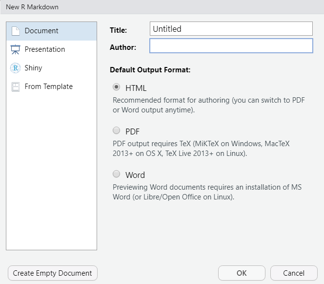
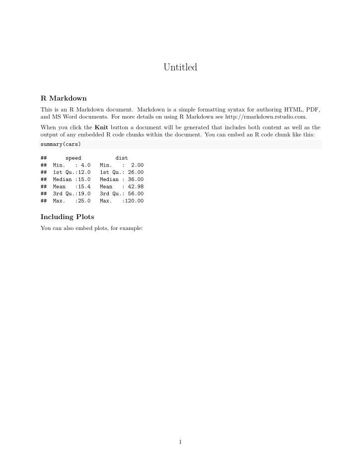
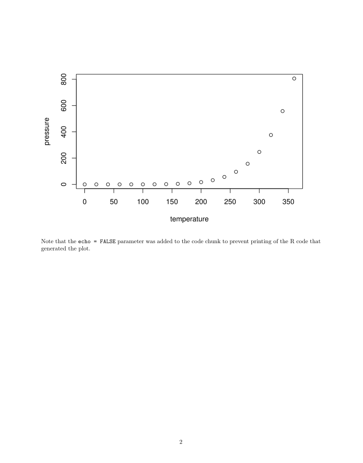

第 2 章 安装
本章介绍安装 R Markdown 相关依赖包的方法，并编译第一个 R Markdown 源文档，输出为 HTML 和 PDF 两种格式。
读者学习 R Markdown 的过程中，可能会用到许多文件记录学习过程，例如 R Markdown 自己的文档，R 的代码脚本，图片和其他笔记文件等等。我们推荐使用 RStudio 自带的项目功能管理相关的文件。可以通过菜单栏中的 File --> New Project 创建新项目，此时 RStudio 会在选定的根目录下生成一个后缀为 .Rproj 的文件，我们可以在该目录创建不同的文件夹记录学习过程。下次启动项目时，只需要通过 RStudio 编辑器右上角下拉菜单内的 Open Project 选项加载该 .Rproj 文件，或者直接双击该文件并使用 RStudio 打开。一个使用项目文件的好处是，我们可以在一个固定的根目录内使用相对路径引用各种文件资源。例如，我们可能有下面的文件结构
ch1
- first-rmd.Rmd
- second-rmd.Rmd
ch2
- third-rmd.Rmd
scripts
- utils.R
images
- my-picture.png
...
learn-rmarkdown.Rproj此时，如果需要在 ch1 文件夹中的 first-rmd.Rmd 中引用 images 文件夹中的 my-picture.png ，可以使用相对路径 ../images/my-picture.png。无论后续我们在 images 中添加多少文件，都只需要在相对路径中改变图片的名称。
此外，使用项目文件还可以让 RStudio 自适应一些 R Markdown 包的特定选项，为我们后续介绍的诸多 R Markdown 扩展功能提供更好的编辑器支持。
2.1 安装 R Markdown
编译 R Markdown 文档需要安装 rmarkdown 包, 在 RStudio 的控制台中运行
install.packages("rmarkdown")中国大陆的读者有可能遇到网络问题，这时可以在 RStudio 的 Tools --> Global Options --> Packages 将 Primary Cran Repository 更改为国内的镜像。也可以在 install.packages 中设置 repos 参数
install.packages("rmarkdown", repos = <某镜像>)2.2 创建第一个 R Markdown 文档
安装完成后，我们可以开始创建第一个 R Markdown 文档。在 RStudio 中选择 File --> New File --> R Markdown, 弹出以下提示框

在这里可以提前设定输出文档的标题，作者和格式。这里我们保留默认设置，点击 OK 即可。
随后，RStudio 编辑器内生成了如下内容
---
title: "Untitled"
output: html_document
---
```{r setup, include=FALSE}
knitr::opts_chunk$set(echo = TRUE)
```
## R Markdown
This is an R Markdown document. Markdown is a simple formatting syntax for authoring HTML, PDF, and MS Word documents. For more details on using R Markdown see <http://rmarkdown.rstudio.com>.
When you click the **Knit** button a document will be generated that includes both content as well as the output of any embedded R code chunks within the document. You can embed an R code chunk like this:
```{r cars}
summary(cars)
```
## Including Plots
You can also embed plots, for example:
```{r pressure, echo=FALSE}
plot(pressure)
```
Note that the `echo = FALSE` parameter was added to the code chunk to prevent printing of the R code that generated the plot.在编辑器内保存该文件，我们可以发现根目录下增加了 first-rmd.Rmd 文件，这种后缀为 .Rmd 的文件即是 R Markdown 的源文档。在源文件中，我们定义了 R Markdown 输出文件的形式和内容。本书后续章节对文本和代码的编辑以及日常使用均是围绕类似这样的源文档展开的。
点击源文档顶部的 Knit 按钮，RStudio 首先提示应保存源文档，读者可以在不更改 .Rmd 文件后缀的情况下任意选择保存名称, 但最好不要包含中文。 保存后，R Markdown 包开始将源文档编译为输出。几秒后弹出以下界面说明编译成功，同时 R Markdown 包安装无误，可以开始快乐的写作了。
## PhantomJS not found. You can install it with webshot::install_phantomjs(). If it is installed, please make sure the phantomjs executable can be found via the PATH variable.图 2.1: first-rmd.Rmd 文件输出的 HTML 文档
图 2.1 给出了我们新创建的 first-rmd.Rmd 文件的 HTML 格式输出结果。此时，与该 R Markdown 源文件同级目录下也应该出现一个 first-rmd.html 文件，读者可以用浏览器打开该 HTML 验证是否与 RStudio 面板中输出的结果一致。
一些读者可能会疑惑，之前点击 Knit 时，为什么我们没有用 library(rmarkdown) 导入 rmarkdown 包，也没有在源文档中运行相关的函数，编译仍能成功呢？当我们点击 Knit 的时候，RStudio 自行调用了
# 第一个参数为你保存的文件名
rmarkdown::render("first-rmd.Rmd", output_format = "html_document")读者不妨自己在控制台内运行一遍以上代码，看结果与点击 Knit 是否相同。
2.3 安装 Tinytex
对于需要生成 PDF 文档的读者，还需要安装 tinytex 包
# 安装 tinytex 包
install.packages("tinytex")
# 安装 TinyTex 套件
tinytex::install_tinytex()安装完成后，在 RStudio 中打开之前保存的 R Markdown 源文档，将第三行 output_format: html_document 更改为 output_format: pdf_document。点击 Knit 后，生成如下两页 PDF 文档，说明安装成功

如果 TinyTeX 下载速度较慢或者下载失败，读者可以先在 Github 上下载对应的压缩包，然后用 install_prebuilt 安装该下载文件，例如
tinytex:::install_prebuilt('~/Downloads/TinyTeX-v2021.01.zip')熟悉 LaTeX 的用户可能会好奇 TinyTeX 的工作机制。TinyTeX 是一个基于 TeX Live 的自定义轻量级 LaTeX 套件，特别为 R Markdown 用户设计了许多定制化的 PDF 编译功能。例如，它可以自动安装编译过程中缺少的宏包。大部分情况下，我们不需要直接使用 TinyTeX 包，R Markdown 已经与之高度集成。此外，建议在安装 TinyTeX 之前卸载系统中已有的 LaTeX 套件，例如 Tex Live，MiKTeX，Mac—TeX 等，否则可能产生冲突。更多信息请参照文档。